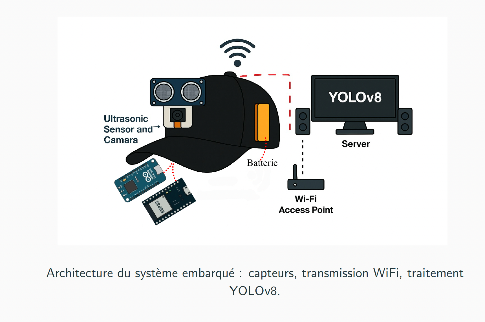

← Retour aux projets
Python
YOLOv8
OpenCV
ESP32-CAM
Arduino MKR1000
HC-SR04
Sockets TCP
Fonctionnement
- Le capteur HC-SR04 mesure la distance en continu
- Sous le seuil critique, il déclenche la capture d'image via l'ESP32-CAM
- L'image est envoyée par socket TCP au serveur Python
- YOLOv8 identifie les objets et leur position dans le cadre
- Le serveur calcule la direction libre (gauche / droite / recul) et l'envoie en retour
- Un message audio est joué sur le haut-parleur de la casquette
Points techniques clés
- Intégration capteur ultrason / microcontrôleur / caméra / serveur IA en pipeline temps réel
- Communication Wi-Fi bas niveau entre ESP32 et serveur Python via sockets
- Modèle YOLOv8 entraîné et optimisé pour la détection d'obstacles courants
- Latence maîtrisée entre détection et retour audio (< 2 secondes)
- Tests sur obstacles réels avec analyse des limites du modèle
